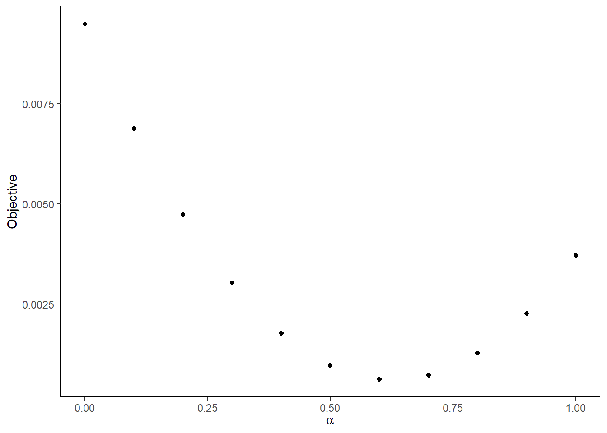
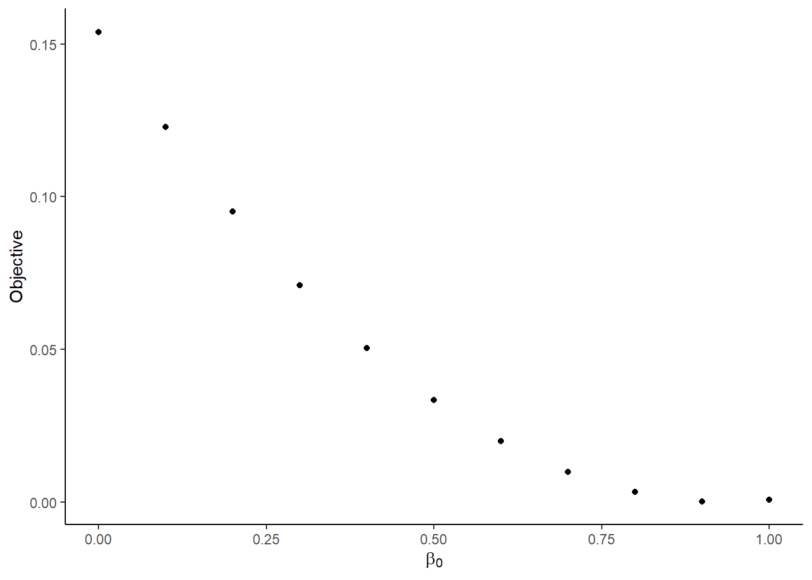

Chapter 12 Assignment 2: Production Function Estimation
12.1 Simulate data
Consider the following production and investment process for \(j = 1, \cdots, 1000\) firms across \(t = 1, \cdots, 10\) periods.
The log production function is of the form: \[ y_{jt} = \beta_0 + \beta_l l_{jt} + \beta_k k_{jt} + \omega_{jt} + \eta_{jt}, \] where \(\omega_{jt}\) is an anticipated shock and \(\eta_{jt}\) is an ex post shock.
The anticipated shocks evolve as: \[ \omega_{jt} = \alpha \omega_{j, t - 1} + \nu_{jt}, \] where \(\nu_{jt}\) is an i.i.d. normal random variable with mean 0 and standard deviation \(\sigma_\nu\). The ex post shock is an i.i.d. normal random variable with mean 0 and standard deviation \(\sigma_{\eta}\).
The product price the same across firms and normalized at 1. The price is normalized at 1. The wage \(w_t\) is constant at 0.5.
Finally, the capital accumulate according to: \[ K_{j, t + 1} = (1 - \delta) K_{jt} + I_{jt}. \]
We set the parameters as follows:
| parameter | variable | value |
|---|---|---|
| \(\beta_0\) | beta_0 |
1 |
| \(\beta_l\) | beta_l |
0.2 |
| \(\beta_k\) | beta_k |
0.7 |
| \(\alpha\) | alpha |
0.7 |
| \(\sigma_{\eta}\) | sigma_eta |
0.2 |
| \(\sigma_{\nu}\) | sigma_nu |
0.5 |
| \(\sigma_{w}\) | sigma_w |
0.1 |
| \(\delta\) | delta |
0.05 |
Define the parameter variables as above.
Write a function that returns the log output given \(l_{jt}\), \(k_{jt}\), \(\omega_{jt}\), and \(\eta_{jt}\) under the given parameter values according to the above production function and name it
log_production(l, k, omega, eta, beta_0, beta_l, beta_k).
log_production(
l = 1,
k = 1,
omega = 1,
eta = 1,
beta_0 = beta_0,
beta_l = beta_l,
beta_k = beta_k
) ## [1] 3.9Suppose that the labor is determined after \(\omega_{jt}\) is observed, but before \(\eta_{jt}\) is observed, given the log capital level \(k_{jt}\).
- Derive the optimal log labor as a function of \(\omega_{jt}\), \(\eta_{jt}\), \(k_{jt}\), and wage. Write a function to return the optimal log labor given the variables and parameters and name it
log_labor_choice(k, wage, omega, beta_0, beta_l, beta_k, sigma_eta).
log_labor_choice(
k = 1,
wage = 1,
omega = 1,
beta_0 = beta_0,
beta_l = beta_l,
beta_k = beta_k,
sigma_eta = sigma_eta
)## [1] 1.388203As discussed in the class, if there is no additional variation in labor, the coefficient on the labor \(\beta_l\) is not identified. Thus, if we generate labor choice from the previous function, \(\beta_l\) will not be identified from the simulated data. To see this, we write a modified version of the previous function in which \(\omega_{jt}\) is replaced with \(\omega_{jt} + \iota_{jt}\), where \(\iota_{jt}\) is an optimization error that follows an i.i.d. normal distribution with mean 0 and standard deviation 0.05. That is, the manager of the firm perceives as if the shock is \(\omega_{jt} + \iota_{jt}\), even though the true shock is \(\omega_{jt}\).
- Modify the previous function by including \(\iota_{jt}\) as an additional input and name it
log_labor_choice_error(k, wage, omega, beta_0, beta_l, beta_k, iota, sigma_eta).
log_labor_choice_error(
k = 1,
wage = 1,
omega = 1,
beta_0 = beta_0,
beta_l = beta_l,
beta_k = beta_k,
iota = 1,
sigma_eta = sigma_eta
)## [1] 2.638203Consider an investment process such that: \[ I_{jt} = (\delta + \gamma \omega_{jt}) K_{jt}, \] where \(I_{jt}\) and \(K_{jt}\) are investment and capital in level. Set \(\gamma = 0.1\), i.e., the investment is strictly increasing in \(\omega_{jt}\). The investment function should be derived by solving the dynamic problem of a firm. But here, we just specify it in a reduced-form.
- Define variable \(\gamma\) and assign it the value. Write a function that returns the investment given \(K_{jt}\), \(\omega_{jt}\), and parameter values, according to the previous equation, and name it
investment_choice(k, omega, gamma, delta).
gamma <- 0.1
investment_choice(
k = 1,
omega = 1,
gamma = gamma,
delta = delta
)## [1] 0.4077423Simulate the data first using the labor choice without optimization error and second using the labor choice with optimization error. To do so, we specify the initial values for the state variables \(k_{jt}\) and \(\omega_{jt}\) as follows.
- Draw \(k_{j1}\) from an i.i.d. normal distribution with mean 1 and standard deviation 0.5. Draw \(\omega_{j1}\) from its stationary distribution (check the stationary distribution of AR(1) process). Draw a wage. Before simulating the rest of the data, set the seed at 1.
df## # A tibble: 1,000 × 5
## j t k omega wage
## <int> <dbl> <dbl> <dbl> <dbl>
## 1 1 1 0.687 0.795 0.5
## 2 2 1 1.09 0.779 0.5
## 3 3 1 0.582 -0.610 0.5
## 4 4 1 1.80 0.148 0.5
## 5 5 1 1.16 0.0486 0.5
## 6 6 1 0.590 -1.16 0.5
## 7 7 1 1.24 0.568 0.5
## 8 8 1 1.37 -1.34 0.5
## 9 9 1 1.29 -0.873 0.5
## 10 10 1 0.847 0.699 0.5
## # … with 990 more rows- Draw optimization error \(\iota_{jt}\) and compute the labor and investment choice of period 1. For labor choice, compute both types of labor choices.
df## # A tibble: 1,000 × 9
## j t k omega wage iota l l_error inv
## <int> <dbl> <dbl> <dbl> <dbl> <dbl> <dbl> <dbl> <dbl>
## 1 1 1 0.687 0.795 0.5 -0.0443 1.72 1.67 0.257
## 2 2 1 1.09 0.779 0.5 -0.0961 2.06 1.94 0.381
## 3 3 1 0.582 -0.610 0.5 0.0810 -0.123 -0.0218 -0.0196
## 4 4 1 1.80 0.148 0.5 0.0260 1.89 1.92 0.391
## 5 5 1 1.16 0.0486 0.5 -0.00279 1.21 1.21 0.176
## 6 6 1 0.590 -1.16 0.5 0.0348 -0.809 -0.766 -0.120
## 7 7 1 1.24 0.568 0.5 0.00268 1.93 1.93 0.370
## 8 8 1 1.37 -1.34 0.5 -0.0655 -0.346 -0.428 -0.330
## 9 9 1 1.29 -0.873 0.5 -0.106 0.165 0.0327 -0.135
## 10 10 1 0.847 0.699 0.5 -0.0104 1.74 1.73 0.280
## # … with 990 more rows- Draw ex post shock and compute the output according to the production function for both labor without optimization error and with optimization error. Name the output without optimization error
yand the one with optimization errory_error.
## # A tibble: 1,000 × 12
## j t k omega wage iota l l_error inv eta y y_error
## <int> <dbl> <dbl> <dbl> <dbl> <dbl> <dbl> <dbl> <dbl> <dbl> <dbl> <dbl>
## 1 1 1 0.687 0.795 0.5 -0.0443 1.72 1.67 0.257 0.148 2.77 2.76
## 2 2 1 1.09 0.779 0.5 -0.0961 2.06 1.94 0.381 0.0773 3.03 3.01
## 3 3 1 0.582 -0.610 0.5 0.0810 -0.123 -0.0218 -0.0196 0.259 1.03 1.05
## 4 4 1 1.80 0.148 0.5 0.0260 1.89 1.92 0.391 -0.161 2.62 2.63
## 5 5 1 1.16 0.0486 0.5 -0.00279 1.21 1.21 0.176 -0.321 1.79 1.78
## 6 6 1 0.590 -1.16 0.5 0.0348 -0.809 -0.766 -0.120 0.187 0.274 0.282
## 7 7 1 1.24 0.568 0.5 0.00268 1.93 1.93 0.370 0.361 3.19 3.19
## 8 8 1 1.37 -1.34 0.5 -0.0655 -0.346 -0.428 -0.330 -0.0113 0.539 0.523
## 9 9 1 1.29 -0.873 0.5 -0.106 0.165 0.0327 -0.135 0.377 1.44 1.41
## 10 10 1 0.847 0.699 0.5 -0.0104 1.74 1.73 0.280 0.316 2.96 2.95
## # … with 990 more rows- Repeat this procedure for \(t = 1, \cdots 10\) by updating the capital and anticipated shocks, and name the resulting data frame
df_all. Use the previously generateddfas the data fort = 1. In each perio, generatenu,iota, andetain this order, if you want to match the realization of the random variables.
df_all## # A tibble: 10,000 × 13
## j t k omega wage iota l l_error inv eta y y_error nu
## <int> <dbl> <dbl> <dbl> <dbl> <dbl> <dbl> <dbl> <dbl> <dbl> <dbl> <dbl> <dbl>
## 1 1 1 0.687 0.795 0.5 -0.0443 1.72 1.67 0.257 0.148 2.77 2.76 NA
## 2 2 1 1.09 0.779 0.5 -0.0961 2.06 1.94 0.381 0.0773 3.03 3.01 NA
## 3 3 1 0.582 -0.610 0.5 0.0810 -0.123 -0.0218 -0.0196 0.259 1.03 1.05 NA
## 4 4 1 1.80 0.148 0.5 0.0260 1.89 1.92 0.391 -0.161 2.62 2.63 NA
## 5 5 1 1.16 0.0486 0.5 -0.00279 1.21 1.21 0.176 -0.321 1.79 1.78 NA
## 6 6 1 0.590 -1.16 0.5 0.0348 -0.809 -0.766 -0.120 0.187 0.274 0.282 NA
## 7 7 1 1.24 0.568 0.5 0.00268 1.93 1.93 0.370 0.361 3.19 3.19 NA
## 8 8 1 1.37 -1.34 0.5 -0.0655 -0.346 -0.428 -0.330 -0.0113 0.539 0.523 NA
## 9 9 1 1.29 -0.873 0.5 -0.106 0.165 0.0327 -0.135 0.377 1.44 1.41 NA
## 10 10 1 0.847 0.699 0.5 -0.0104 1.74 1.73 0.280 0.316 2.96 2.95 NA
## # … with 9,990 more rows- Check the simulated data by making summary table.
| N | Mean | Sd | Min | Max | |
|---|---|---|---|---|---|
| j | 10000 | 500.5000000 | 288.6894251 | 1.0000000 | 1000.0000000 |
| t | 10000 | 5.5000000 | 2.8724249 | 1.0000000 | 10.0000000 |
| k | 10000 | 0.9797900 | 0.5838949 | -1.2822534 | 3.2332312 |
| omega | 10000 | -0.0055826 | 0.7025102 | -2.5894171 | 2.6281307 |
| wage | 10000 | 0.5000000 | 0.0000000 | 0.5000000 | 0.5000000 |
| iota | 10000 | -0.0000696 | 0.0502883 | -0.1841453 | 0.1715419 |
| l | 10000 | 0.9799746 | 1.0965108 | -3.3281023 | 4.9679634 |
| l_error | 10000 | 0.9798876 | 1.0971595 | -3.3765433 | 4.9520674 |
| inv | 10000 | 0.1793502 | 0.3006526 | -1.2722627 | 3.2975332 |
| eta | 10000 | 0.0015825 | 0.2001539 | -0.7650371 | 0.7455922 |
| y | 10000 | 1.8778479 | 1.1171035 | -2.4680251 | 6.1228291 |
| y_error | 10000 | 1.8778305 | 1.1169266 | -2.4777133 | 6.1196499 |
| nu | 10000 | -0.0021155 | 0.4984324 | -2.1513907 | 1.8253882 |
12.2 Estimate the parameters
For now, use the labor choice with optimization error.
- First, simply regress \(y_{jt}\) on \(l_{jt}\) and \(k_{jt}\) using the least square method.
##
## Call:
## lm(formula = y_error ~ l_error + k, data = df_all)
##
## Residuals:
## Min 1Q Median 3Q Max
## -0.73002 -0.14117 -0.00071 0.13743 0.87983
##
## Coefficients:
## Estimate Std. Error t value Pr(>|t|)
## (Intercept) 0.892542 0.004058 219.966 <2e-16 ***
## l_error 0.997913 0.002396 416.454 <2e-16 ***
## k 0.007599 0.004503 1.688 0.0915 .
## ---
## Signif. codes: 0 '***' 0.001 '**' 0.01 '*' 0.05 '.' 0.1 ' ' 1
##
## Residual standard error: 0.2068 on 9997 degrees of freedom
## Multiple R-squared: 0.9657, Adjusted R-squared: 0.9657
## F-statistic: 1.408e+05 on 2 and 9997 DF, p-value: < 2.2e-16- Second, take within-transformation on \(y_{jt}\), \(l_{jt}\), and \(k_{jt}\) and let \(\Delta y_{jt}\), \(\Delta l_{jt}\), and \(\Delta k_{jt}\) denote them. Then, regress \(\Delta y_{jt}\) on \(\Delta l_{jt}\), and \(\Delta k_{jt}\) by the least squares method.
##
## Call:
## lm(formula = dy_error ~ -1 + dl_error + dk, data = df_all_within)
##
## Residuals:
## Min 1Q Median 3Q Max
## -0.72450 -0.13285 -0.00244 0.12931 0.77657
##
## Coefficients:
## Estimate Std. Error t value Pr(>|t|)
## dl_error 0.9910916 0.0029548 335.413 <2e-16 ***
## dk -0.0009029 0.0127539 -0.071 0.944
## ---
## Signif. codes: 0 '***' 0.001 '**' 0.01 '*' 0.05 '.' 0.1 ' ' 1
##
## Residual standard error: 0.1961 on 9998 degrees of freedom
## Multiple R-squared: 0.9184, Adjusted R-squared: 0.9184
## F-statistic: 5.629e+04 on 2 and 9998 DF, p-value: < 2.2e-16Next, we attempt to estimate the parameters using Olley-Pakes method. Estimate the first-step model of Olley-Pakes method: \[ y_{jt} = \beta_1 l_{jt} + \phi(k_{jt}, I_{jt}) + \eta_{jt}, \] by approximating \(\phi_t\) by a kernel function.
Remark that \(\phi\) in general depends on observed and unobserved state variables. For this reason, in theory, \(\phi\) should be estimated for each period. In this exercise, we assume \(\phi\) is common across periods because we know that there is no unobserved state variables in the true data generating process. Moreover, we do not include \(w_t\) because we know that it is time -invariant. Do not forget to consider them in the actual data analysis.
You can use npplreg function of np package to estimate a partially linear model with a multivariate kernel. You first use npplregbw to obtain the optimal band width and then use npplreg to estimate the model under the optimal bandwidth. The computation of the optimal bandwidth is time consuming.
- Return the summary of the first stage estimation and plot the fitted values against the data points.
##
## Partially Linear Model
## Regression data: 10000 training points, in 3 variable(s)
## With 1 linear parametric regressor(s), 2 nonparametric regressor(s)
##
## y(z)
## Bandwidth(s): 0.07355058 0.01435558
##
## x(z)
## Bandwidth(s): 0.03908594 0.01191551
##
## l_error
## Coefficient(s): 0.2493396
##
## Kernel Regression Estimator: Local-Constant
## Bandwidth Type: Fixed
##
## Residual standard error: 0.1934778
## R-squared: 0.9700706
##
## Continuous Kernel Type: Second-Order Gaussian
## No. Continuous Explanatory Vars.: 2
- Check that \(\beta_l\) is not identified with the data without optimization error. Estimate the first stage model of Olley-Pakes with the labor choice without optimization error and report the result.
##
## Partially Linear Model
## Regression data: 10000 training points, in 3 variable(s)
## With 1 linear parametric regressor(s), 2 nonparametric regressor(s)
##
## y(z)
## Bandwidth(s): 0.07347226 0.01437256
##
## x(z)
## Bandwidth(s): 0.02960262 0.009987366
##
## l
## Coefficient(s): 1.187301
##
## Kernel Regression Estimator: Local-Constant
## Bandwidth Type: Fixed
##
## Residual standard error: 0.1932366
## R-squared: 0.9701184
##
## Continuous Kernel Type: Second-Order Gaussian
## No. Continuous Explanatory Vars.: 2Then, we estimate the second stage model of Olley-Pakes method: \[ y_{jt} - \hat{\beta_l} l_{jt} = \beta_0 + \beta_k k_{jt} + \alpha[\hat{\phi}(k_{j, t - 1}, I_{j, t - 1}) - \beta_0 - \beta_k k_{j, t-1}] + \nu_{jt} + \eta_{jt}. \]
In this model, we do not have to non-parametetrically estimate the conditional expectation of \(\omega_{jt}\) on \(\omega_{j, t - 1}\), because we know that the anticipated shock follows an AR(1) process. Remark that we in general have to non-parametrically estimate it.
The model is non-linear in parameters, because of the term \(\alpha \beta_0\) and \(\alpha \beta_k\). We estimate \(\alpha\), \(\beta_0\), and \(\beta_k\) by a GMM estimator. The moment is: \[ g_{JT}(\alpha, \beta_0, \beta_k) \equiv \frac{1}{JT}\sum_{j = 1}^J \sum_{t = 1}^T \{y_{jt} - \hat{\beta_l} l_{jt} - \beta_0 - \beta_k k_{jt} - \alpha[\hat{\phi}(k_{j, t - 1}, I_{j, t - 1}) - \beta_0 - \beta_k k_{j, t-1}]\} \begin{bmatrix} k_{jt} \\ k_{j, t - 1} \\ I_{j, t - 1} \end{bmatrix}. \]
- Using the estimates in the first step, compute:
\[
y_{jt} - \hat{\beta_l} l_{jt},
\]
and:
\[
\hat{\phi}(k_{j, t - 1}, I_{j, t - 1}),
\]
for each \(j\) and \(t\) and save it as a data frame names
df_all_1st.
df_all_1st## # A tibble: 10,000 × 4
## j t y_error_tilde phi_t_1
## <int> <dbl> <dbl> <dbl>
## 1 1 1 2.34 NA
## 2 1 2 1.37 2.21
## 3 1 3 0.621 1.49
## 4 1 4 0.447 0.880
## 5 1 5 0.878 0.611
## 6 1 6 1.62 0.926
## 7 1 7 0.558 1.40
## 8 1 8 0.684 0.439
## 9 1 9 0.939 0.525
## 10 1 10 1.49 0.838
## # … with 9,990 more rows- Compute a function that returns the value of \(g_{JT}(\alpha, \beta_0, \beta_k)\) given parameter values, data, and
df_all_1st, and name itmoment_olleypakes_2nd. Show the values of the moments evaluated at the true parameters.
moment_olleypakes_2nd(
alpha = alpha,
beta_0 = beta_0,
beta_k = beta_k,
df_all = df_all,
df_all_1st = df_all_1st
)## [1] -0.018459481 -0.019010969 -0.003815687Based on the moment, we can define the objective function of a generalized method of moments estimator with a weighting matrix \(W\) as: \[ Q_{JT}(\alpha, \beta_0, \beta_k) \equiv g_{JT}(\alpha, \beta_0, \beta_k)' W g_{JT}(\alpha, \beta_0, \beta_k). \]
- Write a function that returns the value of \(Q_{JT}(\alpha, \beta_0, \beta_k)\) given the vector of parameter values, data, and
df_all_1st, and name itobjective_olleypakes_2nd. Setting \(W\) at the identity matrix, show the value of the objective function evaluated at the true parameters.
W <- diag(3)
theta <-
c(
alpha,
beta_0,
beta_k
)
objective_olleypakes_2nd(
theta = theta,
df_all = df_all,
df_all_1st = df_all_1st,
W = W
)## [,1]
## [1,] 0.0007167288Draw the graph of the objective function when one of \(\alpha\), \(\beta_0\), and \(\beta_k\) are changed from 0 to 1 by 0.1 while the others are set at the true value. Is the objective function minimized at around the true value? 

Find the parameters that minimize the objective function using
optim. You may useL-BFGS-Bmethod to solve it.
## $par
## [1] 0.7023647 0.9766275 0.6694232
##
## $value
## [1] 2.027934e-07
##
## $counts
## function gradient
## 10 10
##
## $convergence
## [1] 0
##
## $message
## [1] "CONVERGENCE: REL_REDUCTION_OF_F <= FACTR*EPSMCH"